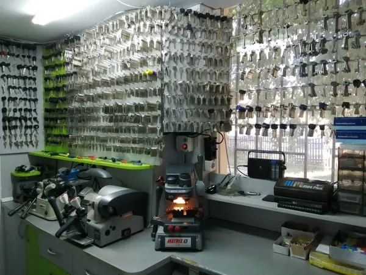
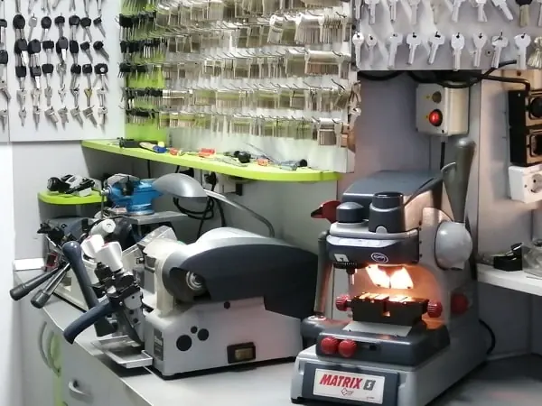
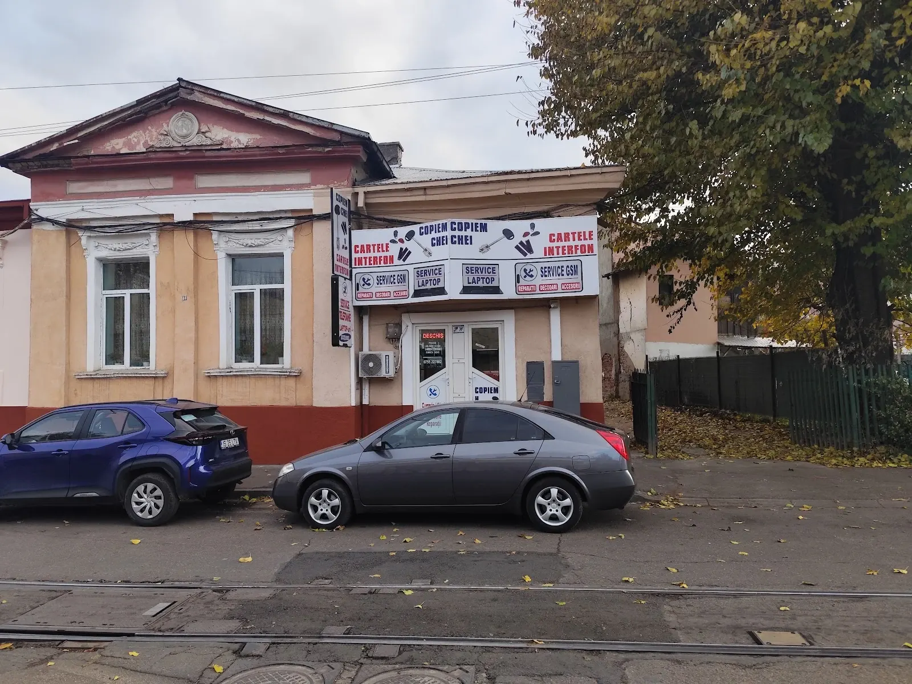
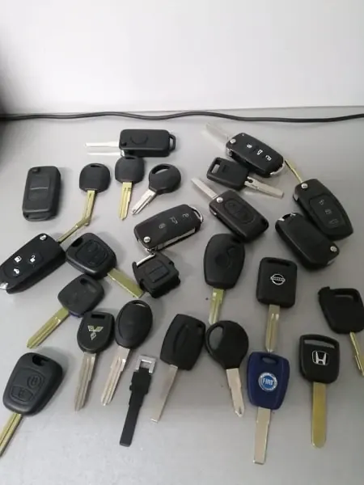
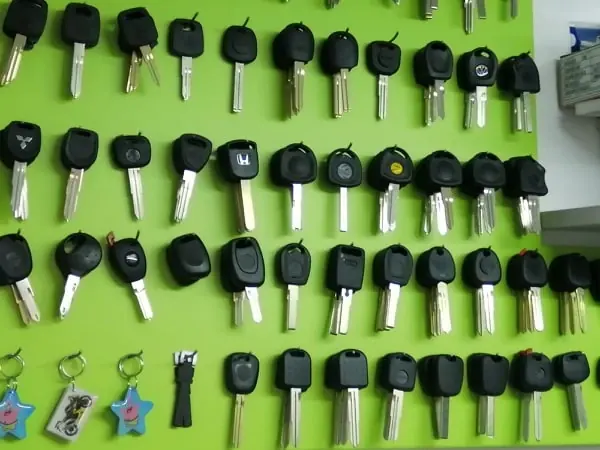
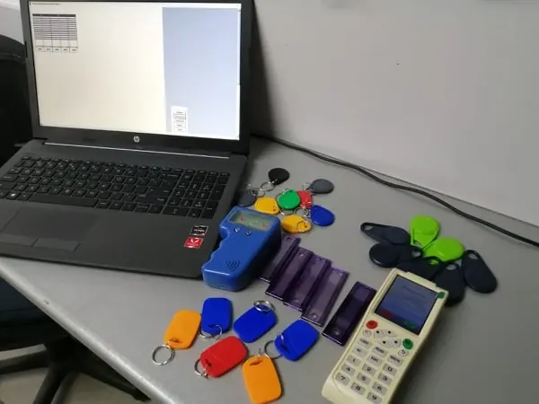
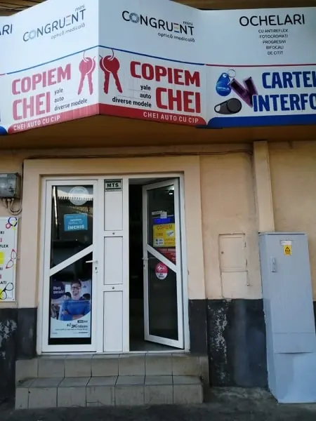

{{Copiem|We cut|Copiamos}}{{chei.|keys.|chaves.}}{{Yale, auto cu cip, cartele de interfon — la Târgu Cucu.|Door keys, chipped car keys, intercom fobs — at Târgu Cucu.|Chaves de porta, de carro com chip, cartões de intercomunicador — em Târgu Cucu.}}
{{În atelier e un perete întreg de chei virgine. Din una dintre ele se taie copia, după cheia dumneavoastră. Spuneți ce cheie aveți — o căutăm pe perete.|The workshop has a whole wall of blank keys. Your copy is cut from one of them, following your key. Tell us which key you have — we’ll find it on the wall.|Na oficina há uma parede inteira de chaves virgens. A cópia é cortada a partir de uma delas, seguindo a sua chave. Diga que chave tem — procuramo-la na parede.}}
{{Cinci feluri de chei. Și o întrebare la telefon pentru restul.|Five kinds of keys. And a phone call for the rest.|Cinco tipos de chaves. E uma chamada para o resto.}}
{{De la cheia dumneavoastră la a doua cheie.|From your key to a second one.|Da sua chave a uma segunda.}}
- 1
{{Aduceți cheia|Bring the key|Traga a chave}}
{{Copia se face după original. Pentru cartele de interfon, aduceți cartela care merge.|The copy follows the original. For intercom fobs, bring the one that works.|A cópia segue o original. Para cartões de intercomunicador, traga o que funciona.}}
- 2
{{Alegem cheia virgină|We pick the blank|Escolhemos a virgem}}
{{De pe perete se alege semifabricatul cu același profil ca al cheii dumneavoastră.|The blank with the same profile as your key is picked off the wall.|Da parede escolhe-se a chave virgem com o mesmo perfil da sua.}}
- 3
{{O tăiem pe mașină|We cut it|Cortamo-la na máquina}}
{{Mașina de copiat urmărește dinții originalului și îi taie în cheia nouă.|The machine traces the original’s teeth and cuts them into the new key.|A máquina segue os dentes do original e corta-os na chave nova.}}
- 4
{{O încercați acasă|Try it at home|Experimente em casa}}
{{Dacă se înțepenește în yală, reveniți cu ea și o verificăm. condiții de confirmat|If it sticks in the lock, bring it back and we’ll check it. terms to be confirmed|Se prender na fechadura, traga-a e verificamos. condições a confirmar}}
{{Mii de chei pe perete, mașinile dedesubt.|Thousands of keys on the wall, machines below.|Milhares de chaves na parede, máquinas por baixo.}}



Strada Cuza Vodă 68
{{Casa veche cu firma albă și roșie «COPIEM CHEI», la linia de tramvai, lângă stația Târgu Cucu.|The old house with the white-and-red “COPIEM CHEI” sign, on the tram line by the Târgu Cucu stop.|A casa antiga com a placa branca e vermelha «COPIEM CHEI», na linha do elétrico, junto à paragem Târgu Cucu.}}
{{Fiecare cheie, cu semifabricatul ei.|Every key has its blank.|Cada chave tem a sua virgem.}}
{{Pe perete stau cheile virgine, pe profiluri. Mai jos: ce copiem, ce trebuie adus și ce e bine de știut înainte să veniți. Prețurile se confirmă la telefon.|The blanks hang on the wall by profile. Below: what we cut, what to bring and what to know before you come. Prices are confirmed on the phone.|As chaves virgens estão na parede, por perfil. Abaixo: o que copiamos, o que trazer e o que saber antes de vir. Os preços confirmam-se ao telefone.}}
{{Spuneți ce cheie aveți.|Tell us which key.|Diga que chave tem.}}
{{Alegeți tipul și câte copii vă trebuie. Mesajul se scrie singur pe măsură ce alegeți; îl trimiteți pe WhatsApp sau prin SMS și primiți răspuns cu prețul și când puteți trece.|Pick the type and how many copies. The message writes itself as you choose; send it on WhatsApp or by SMS and get an answer with the price and when to come.|Escolha o tipo e quantas cópias. A mensagem escreve-se sozinha à medida que escolhe; envie por WhatsApp ou SMS e recebe resposta com o preço e quando passar.}}
{{O cameră, un perete de chei.|One room, one wall of keys.|Uma sala, uma parede de chaves.}}
{{Atelierul de pe Cuza Vodă 68 e mic și plin: chei virgine pe tot peretele, rafturi verzi cu scule, mașini de copiat pe banc și, pe masă, aparatele pentru cartele de interfon.|The workshop at Cuza Vodă 68 is small and full: blanks across the whole wall, green shelves of tools, cutting machines on the bench and, on the table, the gear for intercom fobs.|A oficina da Cuza Vodă 68 é pequena e cheia: chaves virgens por toda a parede, prateleiras verdes com ferramentas, máquinas de copiar na bancada e, na mesa, os aparelhos para cartões de intercomunicador.}}




{{Cine copiază cheile, de câți ani e atelierul aici și ce aparate are pentru cartele: de confirmat cu atelierul. Locul acesta e pentru povestea lor, spusă de ei.|Who cuts the keys, how long the shop has been here and which fob systems it handles: to be confirmed. This space is for their story, in their words.|Quem copia as chaves, há quantos anos a oficina aqui está e que sistemas de cartões trabalha: a confirmar. Este espaço é para a história deles, contada por eles.}}
Cuza Vodă 68.
{{La linia de tramvai, lângă stația Târgu Cucu. Sunați înainte dacă veniți pentru o cheie mai rară — vă spunem dacă e pe perete.|On the tram line, by the Târgu Cucu stop. Call first if your key is unusual — we’ll tell you if it’s on the wall.|Na linha do elétrico, junto à paragem Târgu Cucu. Ligue antes se a sua chave for rara — dizemos-lhe se está na parede.}}
{{Date de contact|Details|Contactos}}
- Strada Cuza Vodă 68
700040 Iași, România - {{Stația de tramvai Târgu Cucu, la câțiva pași|Târgu Cucu tram stop, a few steps away|Paragem de elétrico Târgu Cucu, a poucos passos}}
- 0747 063 703
- {{4,7 pe Google|4.7 on Google|4,7 no Google}}